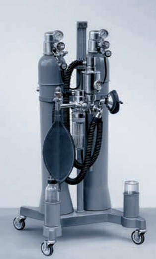

Wo technisch machbar und wirtschaftlich sinnvoll, konnten viele neue Lösungen im Aufbau und in der
Ausrüstung der Narkoseapparate gefunden werden. So entstand nach Romulus und Remus,
die als Schrankapparate nicht gerade günstig waren, sehr bald die Gerätegruppe Agrippa 1, 2 und 3.
Sie war im Prinzip ein vereinfachter und damit preisgünstiger Nachfolger des Modells „F“ aus dem Jahre 1948.
Agrippa-Modelle
Die Agrippa-Modelle unterschieden sich lediglich durch die Anzahl der Anschlussmöglichkeiten:
Agrippa 1 (ursprüngl. Modell „M“): für Sauerstoff-Äther
Agrippa 2 (ursprüngl. Modell „N“): für Sauerstoff-Lachgas-Äther
Agrippa 3: für Sauerstoff-Lachgas-Cyclopropan-Äther

Die Agrippa-Reihe des Drägerwerkes von 1952, ein Nachfolger des Modells „F“.